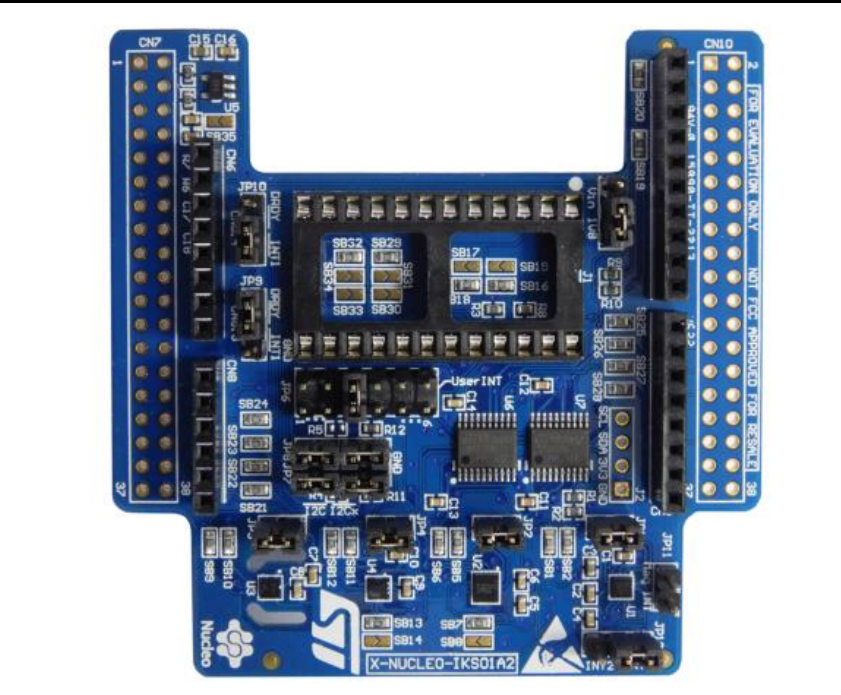

MEMS Senzory #
Rozširujúci modul pre STM32 Nucleo64 s MEMS senzormi X-NUCLEO-IKS01A2.
Dokumentácia
Dokumentácia k modulu
Dokumentácia k senzorom
Knižnice pre obsluhu senzorov modulu.
Adresácia komponentov
Senzory majú priradené pevné adresy
7-bitove adresy (bez bitového posunu)
0x6D 107 LSM6DSL akcelometer a gyroskop
0x5F 95 HTS221 teplomer a vlhkomer
0x5D 93 LPS22HB tlakomer
0x1e 30 LSM303AGH akcelerometer
0x19 25 LSM303AGH magneticky senzor


Programovanie #
Nahratie knižníc
python pyboard.py -f cp lib_lsm6ds3.py :lib_lsm6ds3.py
python pyboard.py -f cp lib_hts221.py :lib_hts221.py
python pyboard.py -f cp lib_lps22.py :lib_lps22.py
python pyboard.py -f cp lib_lsm303agr_mag.py :lib_lsm303agr_mag.py
LSM6DSL - Akcelerometer a gyroskop #
import math
import time
from pyb import I2C
from lib_lsm6ds3 import *
i2c = I2C(1, I2C.CONTROLLER, baudrate=400000) # inicializacia rozhrania
print('Kontrola zariadeni na zbernici :', i2c.scan())
sensor = LSM6DS3(i2c, address=107, mode=PERFORMANCE_MODE_416HZ) #mode=NORMAL_MODE_104HZ)
for i in range(10):
ax, ay, az, gx, gy, gz = sensor.get_readings()
print(ax, ay, az)
print(gx, gy, gz, math.sqrt(ax**2 + ay**2 + az**2)*0.061 )
print()
HTS221 - Teplomer a vlhkomer #
import math
import time
from pyb import I2C
from lib_hts221 import *
i2c = I2C(1, I2C.CONTROLLER, baudrate=400000) # inicializacia rozhrania
print('Kontrola zariadeni na zbernici :', i2c.scan())
hts = HTS221(i2c)
for i in range(10):
hts.get()
LPS22HB - Tlakomer #
import math
import time
from pyb import I2C
from lib_lps22 import *
i2c = I2C(1, I2C.CONTROLLER, baudrate=400000) # inicializacia rozhrania
print('Kontrola zariadeni na zbernici :', i2c.scan())
lps = LPS22(i2c)
time.sleep(0.1)
for i in range(10):
lps.get()
LSM303AGH - Magnetometer #
import math
import time
from pyb import I2C
from lib_lsm303agr_mag import *
i2c = I2C(1, I2C.CONTROLLER, baudrate=400000) # inicializacia rozhrania
print('Kontrola zariadeni na zbernici :', i2c.scan())
mag = LSM303AGR_MAG(i2c)
for i in range(10):
print(mag.magnetic())